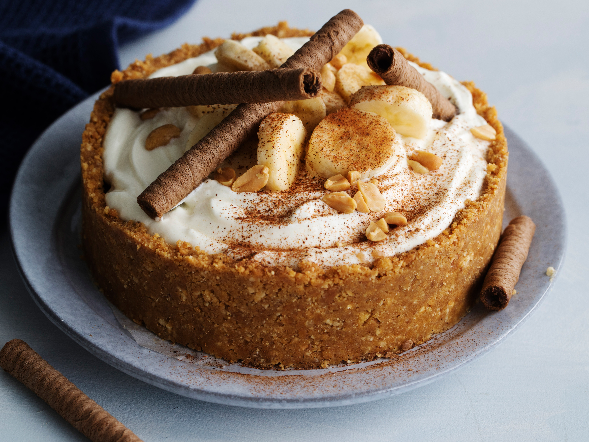

Sobre o "Banoffee"
Com camadas de banana, doce de leite e chantilly, a banoffee é uma torta criada na
Inglaterra nos
anos 1970 de preparação extremamente simples, o que talvez
explique sua vocação para se tornar popular
— já tem releituras feitas por chefs e
confeiteiros na cidade.
A base da massa é de biscoito. O toffee, no caso o doce de leite, vai sobre ela. Por
cima vem a camada de bananas e, para finalizar, o chantilly. A receita original do
chef inglês Ian Dowding é feita com massa sablée
(suave, arenosa, feita com farinha
e quantidades iguais de manteiga e açúcar); doce de leite caseiro
(feito com leite
condensado cozido mesmo); fatias de bananas (cortadas 'de comprido') e chantilly
com café.

Ingredientes
Base
- 300g de bolacha maisena
- 150g de manteiga sem sal
Recheio
- 1 lata de leite condensado
- 2 a 3 bananas nanicas cortadas ao meio em fatias ‘de comprimento’
- 300 ml de creme de leite fresco
- 40g de açúcar
- 10g de café em pó solúvel
This here a text of check pull request...